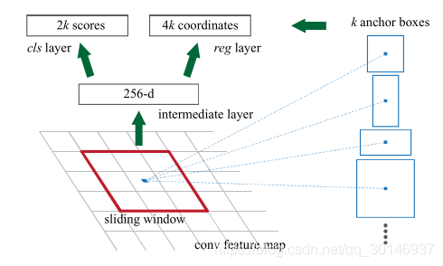
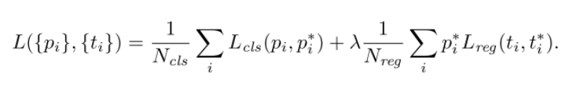
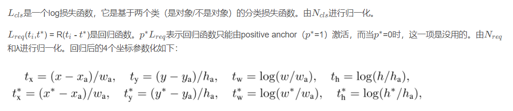

- 在 Fast R-CNN 降低了卷积的时间时候
， - 引入了一个 region proposal 的网络 RPN
（ ） ， （ ） ， - 生成区域后用 Fast R-CNN 继续做
- 将 RPN 和 Fast R-CNN 合并成一个新的网络
introduction
卷积特征映射也可以用来生成 region proposal
在特征的基础上添加额外的卷积层来构建 RPN
为了将两个网络融合
Region Proposal Networks
输入任意大小的图像

- slide a small network over the feature map
- input $n \times n$ spatial window of the feature map
- output 低维向量
- 就是一个 $n\times n$ 的卷积层
- 分支出去两个
， ， - 之前说了是 FCN
，
Anchor
在每个 sliding window 上
我们使用一个 sliding window 在 feature map 上滑动
we use $3$ scales with box areas of $128^2$, $256^2$ , and $512^2$ pixels, and $3$ aspect ratios of $1:1, 1:2,$ and $2:1$
这样就会有 $3 \times 3$ 一共 $9$ 种 anchor
基于候选框的 cls 的得分
Loss


权值共享
论文提出一种算法通过交替优化来实现权值共享
- 利用ImageNet预训练分类模型初始化前置卷积网络层参数
， ； - 固定RPN网络独有的卷积层以及全连接层参数
， ， 。 - 固定利用Fast RCNN训练好的前置卷积网络层参数
， 。 - 同样保持固定前置卷积网络层参数
， 。 ， 。 。